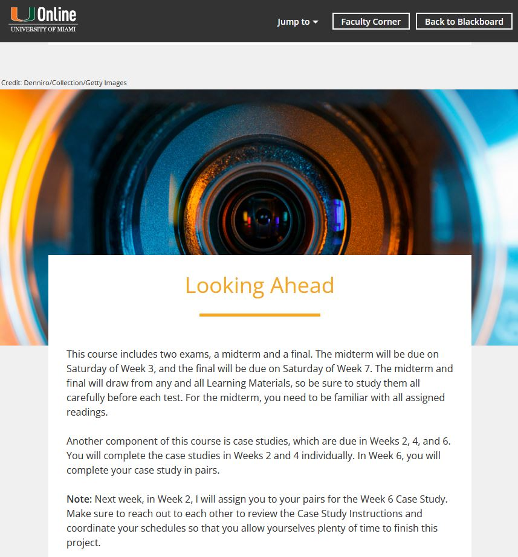

Instructional Systems Design

After expressing an interest in building courses while at 21CLS, I was given the opportunity to work on the Instructional Systems Design (ISD) team. My hands touched hundreds of courses while in this role.
I helped to analyze course manuscripts written by outside contractors, did basic course maintenance (updating and removing dead links), and managed the HTML build project through Laureate's unique design process.
I also served as a go-between for the editorial department, media teams, and IT. I identified possible build issues with assignments that were not compatible with the Blackboard LMS, made suggestions on how to modify the assignments so they would fit—while still completing the learning objectives—and many other tasks.
Each course was its own project, attached to a different team of people, most working remotely.
Responsibilities: Analysis, project management, eLearning development, content
writing, resource collection, research, web development, remote team collaboration
Target Audience: Students earning Master and PhD level degrees online
Tools Used: Microsoft Office, SharePoint, Jira, Adobe Experience Manager, Adobe
Dreamweaver, Web Browsers (Firefox and Chrome), Blackboard, Canvas
Client: Laureate Education, Walden University, University of Miami, University of
Roehampton, and more
Process
Our main client at 21CLS, Laureate, had a unique process for building online courses.
When a course was handed off to the ISD team, it would be mostly complete. However, sometimes a course would only be partially complete, and we would need to work with instructors to finish adding the content to a course manuscript.
Essentially, our task was to help finish any course handed to us. This involved a process of analysis, which identified any missing components, such as handouts, links, or pending resources. We also had to ensure the course grades lined up correctly, and help work out the point assignments for student projects.
Once the analysis of a course was complete, the ISD team passed the course to a team of contract editors, who reviewed the course for copyediting purposes. After the courses came back from editorial, ISD cleaned up the manuscripts and prepared the files to be built into HTML templates.
For each university, Laureate contracted with outside web designers to develop the look of the course specific to the university. Once they had the look decided, they implemented it as a standard across most of the courses. These templates would utilize xml pages and plugins in order to be displayed properly within Blackboard. Our job in ISD was to learn the template and use it as a base for all the courses we built with Laureate. These templates changed multiple times while I was with 21CLS, and I gained a lot of experience working with HTML and LMSs as a result.
After learning the template, we would build the content of the course manuscripts into them using Adobe Dreamweaver, link them up to the LMS (usually Blackboard), and test the course builds thoroughly to ensure all the assignments were properly “hooked up” to the LMS. We also built out the gradebook portion of the course in Blackboard using standardized rubrics provided by the universities (which we often built into the gradebook as well).
eLearning Development

During the analysis phase of the development of a course, we would read over the information and ensure it aligned with the learning objectives. Sometimes learning objectives were not yet complete, so we assisted in helping to write them. If an assignment was written in vague terms, we would flesh it out, or make the instructions clearer.
Sometimes we would have to rewrite instructions so that they fit with the LMS environment. The instructors contracted to write the assignments didn't have extensive knowledge on how the LMSs worked, so the ISD team often assisted them in designing assignments that worked for both the LMS and for the learning objectives of the course.
We worked with a vast team of people, core members of Laureate, instructors with the various universities that hired Laureate to assist them, media teams outside of 21CLS, freelance editorial teams, IT teams, and all different branches of the business in order to get courses updated and online in time for deployment.
Conclusion
My work in ISD at 21CLS proved invaluable. I learned the importance of setting strong learning objectives, of ensuring assignments reinforced those objectives, and how to work within the limitations of LMS platforms to ensure those learning objectives are still enforced.
I got the chance to work with teams of people around the world. Sometimes I stood as a go-between for instructors and Laureate, ensuring the courses met with their high standards so that everyone was satisfied. I kept meticulous track of files and projects so that I could update stakeholders on the status of course builds.
I tracked the progress of up to 10 courses at a time, making sure they were being done to the best quality. I learned so much in this role, and it served to cement my interest and love of instructional design as a career.